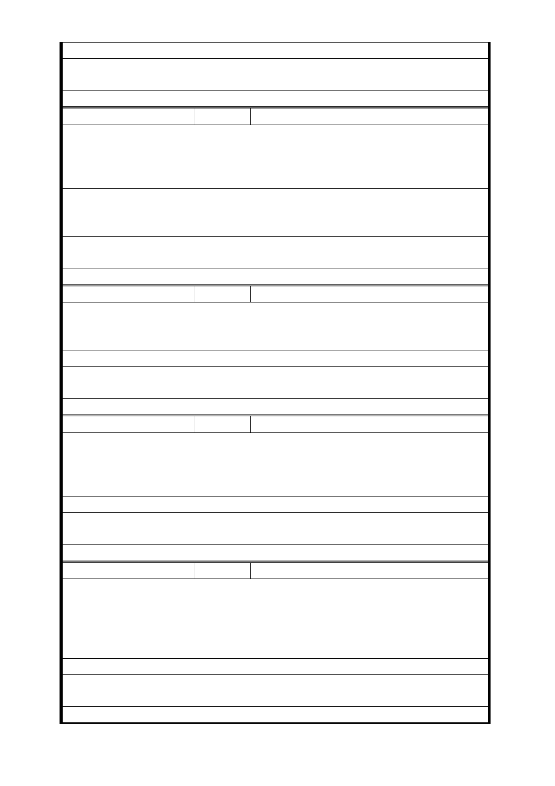

影響只有加分，沒減分，更可擴大政府的美意。
市府回應
意見
同編號捷五－1 回應意見。
委員會決議 同編號交一－1 委員會決議。
編 號 捷五-24 陳情人 曾○興、林○永、張陳○蓮
請不要將 LGO3 設於此地，因此離捷運龍山寺很近，步行約
陳情理由
不到 10 分鐘，喪失其效用。且此地均屬私人土地，如行強制
徵收，造成大多數人無家可歸，造成社會問題，對社會也是
很大的成本支出，請審慎評估。
改設於青年公園，具有景觀特色，又可真正疏散人群，且未
建 議 辦 法 來銜接中和線，更為方便，對於捷運用地取得也屬容易，可
群聚人群，又節省經費開銷，真正帶動萬華地區經濟。
市府回應
意見
同編號捷五－1 回應意見。
委員會決議 同編號交一－1 委員會決議。
編 號 捷五-25 陳情人 彭○松、吳○偉
我們目前的住宅建物結構堅固，環境清幽，屋齡才 23 年，沒
陳 情 理 由 有迫切改建需求，除非政府提出更優惠的合建辦法，否則我
們建議將捷運出口移到別處，或縮小其涵蓋範圍。
建 議 辦 法 請以公共用地蓋捷運出口。
市府回應
意見
同編號捷五－1 回應意見。
委員會決議 同編號交一－1 委員會決議。
編 號 捷五-26 陳情人 郭○珍
希望捷運出口移至別處。聽了公聽會聯合開發辦法，使原地
陳情理由
主權益受損嚴重、人口移出，以一筆固定拆遷補償太微薄，
致使原地主將流落街頭。政府若無租金補償或安排地主合建
期間的住所，萬萬不可輕易徵收原地主的房屋權利。
建 議 辦 法 請以「機關用地」蓋捷運出入口 A（捷五用地）
市府回應
意見
同編號捷五－4 回應意見。
委員會決議 同編號交一－1 委員會決議。
編 號 捷五-27 陳情人 黃○樺
希望捷運出口移至別處。聽了公聽會聯合開發辦法，原地主
權益受損太大，拆遷補償太微薄無法接受，反對徵收原地主
陳 情 理 由 土地的權利，屋齡才 23 年，沒有迫切改建需求，除非政府提
出更優惠條件，不使原地主權益受損，否則建議將捷運出口
移到「公家土地」（學校土地）或縮小範圍。
建 議 辦 法 請以「機關用地」蓋捷運出入口 A「捷五」
市府回應
意見
同編號捷五－4 回應意見。
委員會決議 同編號交一－1 委員會決議。
- 69 -